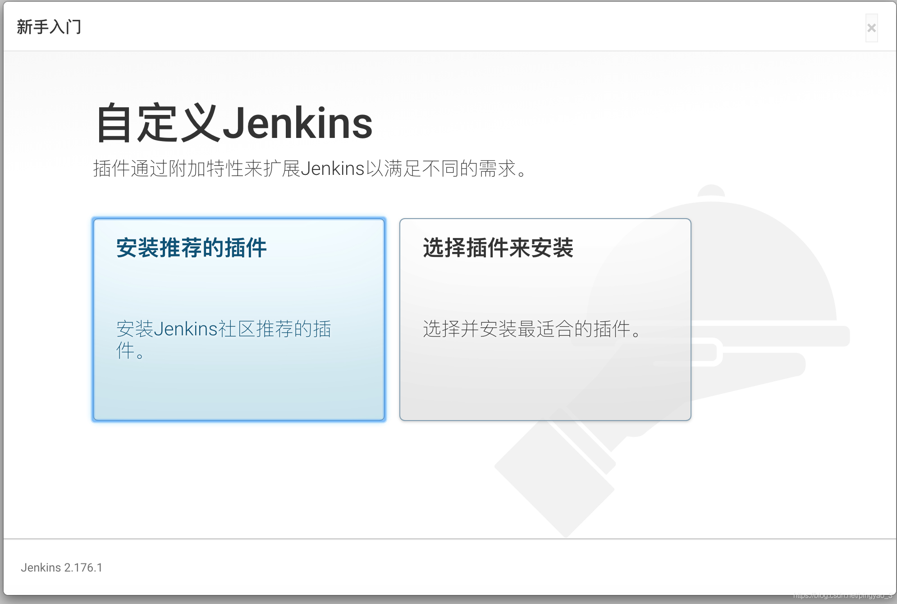

Jenkins搭建
Jenkins简介
Jenkins是⼀个开源的、提供友好操作界面的持续集成(CI)工具，起源于Hudson（Hudson是商用的），主要用于持续、自动的构建/测试软件项目、监控外部任务的运行。Jenkins用Java语⾔编写，可在Tomcat等流⾏的servlet容器中运行，也可独立运行。通常与版本管理工具(SCM)、构建⼯具结合使⽤。
Jenkins安装前置
连接云服务器工具推荐
Xftp
简介
Xftp是一个功能强大的SFTP、FTP 文件传输软件。使用了 Xftp 以后，MS Windows 用户能安全地在 UNIX/Linux 和 Windows PC 之间传输文件。Xftp 能同时适应初级用户和高级用户的需要。它采用了标准的 Windows 风格的向导，它简单的界面能与其他 Windows 应用程序紧密地协同工作，此外它还为高级用户提供了众多强劲的功能特性。
下载方法
Xftp提供教育/家庭版，供个人使用。
使用相关说明
打开Xftp后，选择图中文件目录下的新建按钮

出现如图窗口，名称任意配置，主机为服务器IP（图中仅为示范），用户名root，如果不清楚密码，可以去服务器管理页重置，然后连接即可。连接好了之后便可以从自己的电脑向服务器进行文件传输。

Xshell
简介
Xshell是一个强大的安全终端模拟软件，它支持SSH1, SSH2, 以及Microsoft Windows 平台的TELNET 协议。Xshell 通过互联网到远程主机的安全连接以及它创新性的设计和特色帮助用户在复杂的网络环境中享受他们的工作。Xshell可以在Windows界面下用来访问远端不同系统下的服务器，从而比较好的达到远程控制终端的目的。除此之外，其还有丰富的外观配色方案以及样式选择。
下载方法
Xshell提供教育/家庭版，供个人使用。
使用相关说明
与Xftp类似
Java配置
在Windows上下载jdk，网址为https://www.oracle.com/java/technologies/javase/javase-jdk8-downloads.html

选择Linux x64 Compressed Archive

使用Xftp将下载的压缩包传到云服务器中，这里我新建了一个Java文件夹。

在xshell使用
tar -zxvf jdk-8u281-linux-x64.tar.gz命令进行解压接下来配置环境变量，将环境变量配置在~/.bashrc文件中
首先在xshell中敲入命令
vi ~/.bashrc敲入
I进入insert模式后，加入下列行export JAVA_HOME=/Java/jdk1.8.0_281 export CLASSPATH=.:$JAVA_HOME/jre/lib/rt.jar:$JAVA_HOME/lib/dt.jar:$JAVA_HOME/lib/tools.jar export PATH=$JAVA_HOME/bin:$PATH其中
JAVA_HOME便是第3步中压缩包的解压路径，结果如下图
MAVEN_HOME是我的maven环境变量，可以无视。然后敲
esc退出insert模式，敲:之后输入wq保存并退出。运行命令
source /.bashrc使环境变量生效运行下列命令查看环境变量
echo $CLASSPATH echo $PATH
运行命令
java -version，如果配置成功可以看到下图
Jenkins安装
Jenkins安装
Jenkins官网的文档其实非常详细，这里我就只把我的安装情况作以说明。我的阿里云服务器的系统是CentOs，因此使用如下命令。
sudo wget -O /etc/yum.repos.d/jenkins.repo https://pkg.jenkins.io/redhat/jenkins.repo
sudo rpm --import https://pkg.jenkins.io/redhat/jenkins.io.key
yum install jenkinsJenkins配置
Jenkins的默认user是Jenkins用户，但是这个账户是缺少权限的，同时Jenkins的默认端口8080可能会与当前服务器的部分已经配置好的服务端口有冲突，因此需要对这些进行配置。
运行命令
vi /etc/sysconfig/jenkins打开配置文件将
JENKINS_USER修改成root
修改
JENKINS_PORT，这里我是将端口改成了8090
云服务器端口配置，由于我用的是阿里云服务器，需要在防火墙内添加规则，打开端口访问

本来打开端口之后按理来说是可以访问了的，但是我这边不知道出了什么问题，还是不行。于是又在云服务器上同步打开了一次端口才得以成功访问。命令如下：
firewall-cmd --permanent --zone=public --add-port=8090/tcp firewall-cmd --reload
Jenkins访问
在浏览器地址栏输入
服务器ip:Jenkins端口号进入Jenkins服务初次登陆应该会显示如下页面（我已经配置完了，下图是找的网图）

在命令行输入
cat /var/lib/jenkins/secrets/initialAdminPassword，将显示的密码粘贴过去即可登陆插件方面安装推荐的插件即可

之后再根据需求创建用户或是任务即可
Tomcat部署
Tomcat简介
Tomcat是由Apache软件基金会属下Jakarta项目开发的Servlet容器，按照Sun Microsystems提供的技术规范，实现了对Servlet和JavaServer Page的支持，并提供了作为Web服务器的一些特有功能，如Tomcat管理和控制平台、安全局管理和Tomcat阀等。
Tomcat的云服务器部署
进入Tomcat下载页，选择Core分支下的tar.gz进行下载
将下载的文件使用xftp传输到服务器中

运行命令
tar -zxvf apache-tomcat-9.0.43.tar.gz进行解压运行命令
mv apache-tomcat-9.0.43 tomcat9改个文件夹的名字方便使用输入命令
vi tomcat9/bin/catalina.sh，添加Java环境变量
输入命令
vi /Tomcat/tomcat9/conf/server.xml修改端口号，这里我改成了9999端口
云服务器端口配置，由于我用的是阿里云服务器，需要在防火墙内添加规则，打开端口访问

输入如下命令打开云服务端口
firewall-cmd --permanent --zone=public --add-port=9999/tcp firewall-cmd --reload访问
服务器ip:tomcat端口号，可以看到如下页面即配置成功